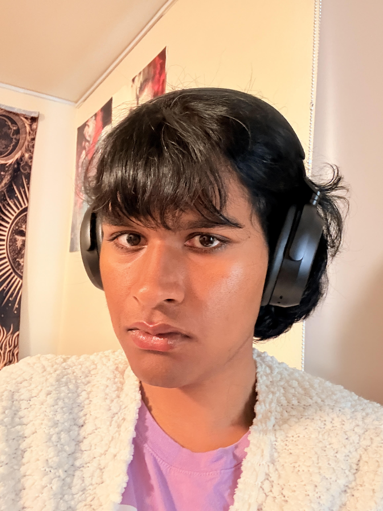

Good afternoon everyone. Families, friends, faculty, staff, and most importantly, the Baskin School of Engineering graduating class of 2026: congratulations.
I want to begin with the banana slug.
That is what this university chose.
Not a bear or a lion, or a cheetah. Not some fast, fearsome animal that looks good on a jersey. UC Santa Cruz students chose a four-inch, bright yellow, shell-less mollusk that lives on the forest floor. Which feels appropriate for a campus where, on any given walk to class, you might pass a deer, a turkey, a squirrel, a coyote pack, or even a family of cows.
And when the University pushed for the more conventional Sea Lion, UC Santa Cruz students did what they do best: they resisted pressure.
Their decision tells you almost everything you need to know about this place, and almost everything you need to carry with you when you leave it.
The banana slug is not impressive in the usual ways. It is not fast, intimidating, or conventionally powerful. It is not trying to convince anyone that it belongs on a battlefield, a billboard, or a ranking list.
It is strange. It is stubborn. It is unmistakable.
And that is exactly what makes it perfect.
Over these past few years, we have been trained to think like engineers.
We learned how to break complexity down into components. We learned to go back to first principles: to build our understanding from what is actually, verifiably true.
And we learned that one of the most important questions an engineer can ask is: does this have to be this way? It is also the question many of us have asked while standing on a packed Route 18 bus, wondering whether we would make it to class on time.
Sometimes that question helped us debug code. Sometimes it helped us survive group projects. Sometimes it helped us stand in the Global Village Cafe line, calculate the wait time on our phones, and decide that coffee was worth a 1 hour wait.
That is a reasonable way to approach a technical problem.
But UC Santa Cruz was teaching us something else too, a lesson that does not appear on any syllabus in any class here. It was teaching us that first principles are not only a way to build better systems. They are a way to refuse bad premises.
UC Santa Cruz was founded as a deliberate alternative to the traditional university system. From the beginning, this place asked whether the old model of higher education was actually working, or whether it had simply gone unexamined long enough to feel inevitable.
The names of our colleges embody these principles.
John R. Lewis College reminds us that justice is not an abstract ideal, but a practice. Oakes College asks us to communicate diversity for a just society. Rachel Carson College reminds us that every system lives inside a larger world of human, social, and environmental consequences.
These principles tell us that we were not educated here simply to become useful to the systems that already exist. We were educated here to question them.
And that matters, because here is the crossroads we are standing at today.
Engineering at UC Santa Cruz has grown tremendously. Science Hill is not the same institution it was when it began. That growth has been exponential. This means more research, more students, more opportunity, and more influence.
But every institution that begins as something radical faces the same risk. Slowly, gradually, without any single decision, it can become ordinary. It learns to optimize for output and forgets its purpose.
You are the answer to that risk.
You leave here today as something rare: technical decision-makers educated in a tradition of resistance.
I have been conducting AI research since my junior year of high school. I spent my undergraduate years working on complex machine learning systems, and I believe this work can expand human creativity, accelerate science, improve accessibility, and help us build tools that are more responsive to the people who use them.
But we cannot afford to be naive. Because the same ideas that make a model more efficient can also make it easier to deploy everywhere. The same predictive systems that help us understand the future can also be used to police, rank, surveil, and target people.
And I say this as someone who has learned that systems are never as neutral as they appear. I have spent a lot of my life being told, directly or indirectly, what kind of person would be easier for the world to understand.
But UC Santa Cruz gave me a different inheritance. This place taught me that refusing to become more convenient is not a weakness. It is the beginning of integrity.
And that is something I will carry with me from this place.
But hope cannot mean pretending the stakes are low, or avoiding the truth because it makes the room quieter. Real hope is not the belief that everything will be fine, but making the decision to take responsibility for what happens next.
That is what UC Santa Cruz has been preparing us to do.
There will be moments when the easiest thing to do is to accept the premise, write the code, run the experiment, submit the design, and move on. There will be moments when people tell you that asking questions is slowing things down, that ethics is someone else’s department, that impact is too complicated, that the system is too big to challenge.
But UC Santa Cruz has taught us to pause. To ask who is missing from the room. To ask who benefits. To ask who is harmed. To ask what has been made invisible by the language of efficiency.
And then, if necessary, to resist. None of us learns how to do that alone. So before I close, I want to thank the people who made it possible for me to stand here.
To my advisor, Dr. Jason Eshraghian: thank you for your mentorship, your faith in me, and your example of rigorous work done with imagination and care. I would almost certainly not be standing here without your guidance.
To my colleagues in the lab, my friends in College Democrats, and my siblings in the trans community. I wish I had the time to name each and every one of you. Please know how deeply I love you, and that all of you, in different ways, taught me what it looks like to hold the line.
And to my mom and dad: thank you for everything, my words cannot express the love I hold for you.
So to the Class of 2026:
When the system tells you, “This is how it has always been done,” remember who has paid the price for that sentence, the people pushed to the margins and treated as data points before they were treated as neighbors.
Our responsibility is not only to build systems that work. It is to build systems that do not require people to disappear in order to function.
When the world tells you “Be faster, sleeker, easier to categorize, easier to fund, easier to rank, easier to explain,” remember the banana slug.
The banana slug does not move fast. It does not pretend to be fierce. It does not become more convenient so the world can understand it.
It survives by being exactly what it is.
And maybe that is the lesson this place has been teaching us all along.
Not resistance as performance. Not resistance as refusal for its own sake. But resistance as discipline. Resistance as responsibility. Resistance as first principles.
Congratulations, Baskin School of Engineering Class of 2026.